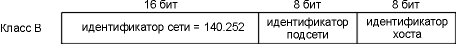

Глава 3 IP: протокол Internet
Введение
IP это рабочая лошадь семейства
протоколов TCP/IP. TCP, UDP, ICMP и IGMP передают свои данные
как IP датаграммы (рисунок 1.4). Один факт часто
удивляет новичков TCP/IP, особенно тех кто работал с
X.25 или SNA, этот факт заключается в том, что IP
ненадежный протокол, предоставляющий сервис
доставки датаграмм без соединения.
Под словом ненадежный мы
подразумеваем то, что не существует гарантии
того, что IP датаграмма успешно достигнет пункта
назначения. Однако IP предоставляет определенный
сервис обработки некоторых событий. Когда
что-нибудь идет не так как хотелось бы, как
например, временное переполнение буфера у
маршрутизатора, IP применяет простой алгоритм
обработки ошибок: он отбрасывает датаграмму и
старается послать ICMP сообщение отправителю.
Любая требуемая надежность должна быть
обеспечена верхними уровнями (например TCP).
Термин без соединения (connectionless)
означает, что IP не содержит никакой информации о
продвижении датаграмм. Каждая датаграмма
обрабатывается независимо от других. Это также
означает, что может быть доставлена испорченная
датаграмма. Если источник отправляет две
последовательные датаграммы (первая A, затем B) в
один и то же пункт назначения, каждая из них
маршрутизируется независимо и может пройти по
разным маршрутам, датаграмма B может прибыть
раньше чем A.
В этой главе мы кратко рассмотрим поля IP
заголовка, опишем IP маршрутизацию и коротко
опишем разделение на подсети. Также мы
рассмотрим две очень полезные команды: ifconfig
и netstat. Более подробно некоторые поля
IP заголовка будут описаны в следующих главах.
Именно тогда мы точно расскажем, как
используются те или иные поля. RFC 791 [Postel
1981a] является официальной спецификацией для IP.
IP заголовок
На рисунке 3.1 показан формат IP датаграммы.
Стандартный размер IP заголовка составляет 20
байт, если не присутствуют опции.

Рисунок 3.1 IP датаграмма,
поля IP заголовка.
Мы покажем как выглядят заголовки
протоколов TCP/IP на рисунке 3.1. Старший значащий
бит имеет номер 0 (слева), а младший значащий бит
из 32-х бит имеет номер 31 и показан справа.
4 байта из 32-битного значения передаются в
следующем порядке: сначала биты 0 - 7, затем биты 8 -
15, затем 16 - 23 и, наконец, 24 - 31. Такой порядок
движения байтов называется big endian
(Примечание переводчика: big endian - метод хранения
или передачи данных, при котором старший
значащий бит или байт стоит первым) и обязателен
для всех двоичных целых чисел в TCP заголовках при
их передаче по сети. Это называется порядок
сетевых байтов (network byte order). Машины, которые
хранят двоичные целые в других форматах, как
например в формате little endian (little endian -
метод хранения или передачи данных, при котором
младший значащий бит или байт стоит первым),
должны конвертировать значения заголовков в
соответствующий порядок сетевых байтов перед
передачей данных.
Текущая версия протокола - 4, поэтому IP
иногда называется IPv4. В разделе "Будущее IP" рассматриваются
некоторые предложения для новых версий IP.
Длина заголовка (header length) это
количество 32-битных слов в заголовке, включая
любые опции. Так как это 4-битное поле, оно
ограничивает размер заголовка в 60 байт. В главе 8 мы увидим, что это ограничение
сильно влияет на некоторые опции, такие как опция
записи маршрута. Обычная величина в этом поле
(когда отсутствуют опции) - 5.
Поле типа сервиса (TOS - type-of-service)
состоит из 3-битного поля приставки (которое в
настоящее время игнорируется), 4 бит TOS и
неиспользуемого бита, который должен быть равен
0. 4 бита TOS следующие: минимальная задержка,
максимальная пропускная способность,
максимальная надежность и минимальная
стоимость. Только один из этих 4 бит может быть
установлен в единицу одновременно. Если все 4
бита равны 0, это означает обычный сервис. RFC 1340 [Reynolds and Postel 1992] указывает, как эти биты
должны быть установлены для всех стандартных
приложений. RFC 1349 [Almquist 1992] содержит
некоторые коррекции для этого RFC и более
детальное описание характеристики TOS.
На рисунке 3.2 показаны рекомендованные
значения поля TOS для различных приложений. В
последней колонке приведено шестнадцатиричное
значение, которое мы увидим в выводе tcpdump
позже в этой главе.
Приложение |
Минимизация
задержки |
Максимизация
производительности |
Максимизация
надежности |
Минимизация
стоимости |
Шестнадцатиричное
значение |
| Telnet/Rlogin |
1 |
0 |
0 |
0 |
0x10 |
| FTP |
|
|
|
|
|
управление |
1 |
0 |
0 |
0 |
0x10 |
данные |
0 |
1 |
0 |
0 |
0x08 |
любые
данные |
0 |
1 |
0 |
0 |
0x08 |
| TFTP |
1 |
0 |
0 |
0 |
0x10 |
| SMTP |
|
|
|
|
|
фаза
команд |
1 |
0 |
0 |
0 |
0x10 |
фаза
данных |
0 |
1 |
0 |
0 |
0x08 |
| DNS |
|
|
|
|
|
UDP запрос |
1 |
0 |
0 |
0 |
0x10 |
TCP запрос |
0 |
0 |
0 |
0 |
0x00 |
передача
зоны |
0 |
1 |
0 |
0 |
0x08 |
| ICMP |
|
|
|
|
|
ошибка |
0 |
0 |
0 |
0 |
0x00 |
запрос |
0 |
0 |
0 |
0 |
0x00 |
| любой IGP |
0 |
0 |
1 |
0 |
0x04 |
| SNMP |
0 |
0 |
1 |
0 |
0x04 |
| BOOTP |
0 |
0 |
0 |
0 |
0x00 |
| NNTP |
0 |
0 |
0 |
1 |
0x02 |
Рисунок 3.2 Рекомендованные значения поля
типа сервиса (TOS).
Диалоговые приложения, Telnet и Rlogin, требуют
свести к минимуму задержку, так как они
используются человеком интерактивно и
осуществляют небольшую передачу данных.
Передача файлов с использованием FTP, с другой
стороны, требует максимальной пропускной
способности. Максимальная надежность необходима
для сетевого управления (SNMP) и для протоколов
маршрутизации. Новости Usenet (NNTP) это
единственное приложение, которое требует
минимизации стоимости.
Характеристика TOS, в настоящее время,
большинством реализаций TCP/IP не поддерживается,
однако она включена в новые системы, начиная с 4.3BSD Reno. Некоторые протоколы
маршрутизации, такие как OSPF и IS-IS,
имеют возможность принимать решение о
маршрутизации на основе этого поля.
В разделе "Вычисление загруженности
последовательной линии" главы 2 мы
упомянули, что драйверы SLIP обычно осуществляют
построение очереди на основе типа сервиса, что
позволяет диалоговому траффику обрабатываться
перед передачей данных. Так как большинство
реализаций не используют поле TOS, это построение
очереди делается с помощью драйвера SLIP, который
смотрит в поле протокола (для того
чтобы определить, является ли данный сегмент TCP
сегментом или нет) и затем проверяет номера
портов TCP источника и назначения, чтобы
определить, принадлежит ли этот номер
диалоговому сервису.
Поле полной длины (total length)
содержит полную длину IP датаграммы в байтах.
Благодаря этому полю и полю длины
заголовка, мы знаем, с какого места начинаются
данные в IP датаграмме и их длину. Так как это поле
состоит из 16 бит, максимальный размер IP
датаграммы составляет 65535 байт. (Обратитесь к
рисунку 2.5 и обратите внимание, что Hyperchannel имеет
MTU, равный 65535. В действительности это не MTU - здесь
используется максимально возможный размер IP
датаграммы). Это поле изменяется в момент
фрагментации и повторной сборки датаграммы, что
будет описано в разделе "Фрагментация
IP" главы 11.
Несмотря на то что существует возможность
отправить датаграмму размером 65535 байт,
большинство канальных уровней поделят подобную
датаграмму на фрагменты. Более того, от хоста не
требуется принимать датаграмму размером больше
чем 576 байт. TCP делит пользовательские данные на
части, поэтому это ограничение обычно не
оказывает влияния на TCP. Что касается UDP, услугами
которого пользуются многие приложения (RIP, TFTP, BOOTP,
DNS, SNMP), то он ограничивает себя 512 байтами
пользовательских данных, что даже меньше
ограничения в 576 байт. Большинство приложений в
настоящее время (особенно те, которые
поддерживают NFS - Network File System) позволяют
использовать IP датаграмму размером 8192 байта.
Однако, поле полной длины
требуется в IP заголовке для некоторых каналов
(как например, Ethernet), который дополняет маленькие
фреймы до минимальной длины. Несмотря на то что
минимальный размер фрейма Ethernet составляет 46 байт
(рисунок 2.1), IP датаграмма может быть еще меньше.
Если поле полной длины не было представлено, IP
уровень не будет знать, сколько 46-байтных фреймов
Ethernet получится из IP датаграммы.
Поле идентификации (identification)
уникально идентифицирует каждую датаграмму,
отправленную хостом. Значение, хранящееся в поле,
обычно увеличивается на единицу с посылкой
каждой датаграммы. Мы обратимся к этому полю,
когда будем рассматривать фрагментацию и обратную сборку в разделе "Фрагментация IP" главы 11.
Там же мы рассмотрим поле флагов (flags) и поле
смещения фрагментации (fragmentation offset).
RFC 791 [Postel
1981a] сообщает, что поле идентификации должно быть
выбрано верхним уровнем, который отправляет IP
датаграммы, а это означает, что две
последовательно отправленные IP датаграммы, одна
из которых сгенерирована TCP, а другая - UDP, должны
иметь одно и то же поле идентификации. Подобный
подход работает (алгоритм сборки может
обработать такую ситуацию). Однако, большинство
реализаций, произошедших от Berkeley, увеличивают
соответствующую переменную в ядре IP уровня
каждый раз, когда отправляется IP датаграмма, вне
зависимости от того какой уровень отправляет
данные через IP. Переменная ядра инициируется
каждый раз в момент загрузки системы.
Поле времени жизни (TTL - time-to-live)
содержит максимальное количество пересылок
(маршутизаторов), через которые может пройти
датаграмма. Это поле ограничивает время жизни
датаграммы. Значение устанавливается
отправителем (как правило 32 или 64) и уменьшается
на единицу каждым маршрутизатором, который
обрабатывает датаграмму. Когда значение в поле
достигает 0, датаграмма удаляется, а отправитель
уведомляется об этом с помощью ICMP сообщения.
Подобный алгоритм предотвращает зацикливание
пакетов в петлях маршрутизации. Мы вернемся к
этому полю в главе 8, когда будем
рассматривать программу Traceroute.
Мы говорили о поле протокола
(protocol) в главе 1 и показали на рисунке 1.8 как оно используется в
IP для демультиплексирования
входящих датаграмм. Это поле указывает, какой
протокол отправил данные через IP.
Контрольная сумма заголовка
(header checksum) рассчитывается только для IP заголовка.
Она не включает в себя данные, которые следуют за
заголовком. ICMP, IGMP, UDP и TCP имеют контрольные суммы
в своих собственных заголовках, которые
охватывают их заголовки и данные.
Чтобы рассчитать контрольную
сумму IP для исходящей датаграммы, поле
контрольной суммы сначала устанавливается в 0.
Затем рассчитывается 16-битная сумма с
поразрядным дополнением (One's complement - поразрядное
дополнение к двоичной системе.) (заголовок
целиком воспринимается как последовательность
16-битных слов). 16-битное поразрядное дополнение
этой суммы сохраняется в поле контрольной суммы.
Когда IP датаграмма принимается, вычисляется
16-битная сумма с поразрядным дополнением. Так как
контрольная сумма, рассчитанная приемником,
содержит в себе контрольную сумму, сохраненную
отправителем, контрольная сумма приемника
состоит из битов равных 1, если в заголовке ничего
не было изменено при передаче. Если в результате
не получились все единичные биты (ошибка
контрольной суммы), IP отбрасывает принятую
датаграмму. Сообщение об ошибке не генерируется.
Теперь задача верхних уровней каким-либо образом
определить, что датаграмма отсутствует, и
обеспечить повторную передачу.
ICMP, IGMP, UDP и TCP используют такой же алгоритм
расчета контрольной суммы. Также TCP и UDP включают
в себя различные поля из IP заголовка, в
дополнение к своим собственным заголовкам и
данным. RFC 1071 [Braden, Borman, and Partridge 1988]
описывает технику и реализацию расчета
контрольной суммы Internet. Так как маршрутизаторы
обычно изменяют только поле TTL (уменьшают его
значение на единицу), маршрутизатор может просто
увеличить на единицу контрольную сумму, когда он
перенаправляет полученную датаграмму, вместо
того чтобы рассчитывать контрольную сумму
заново для IP заголовка в целом. RFC 1141 [Mallory
and Kullberg 1990] описывает как этого можно добиться.
Стандартные реализации
BSD, однако, не используют метод обновления
контрольной суммы на единицу при
перенаправлении датаграммы.
Каждая IP датаграмма содержит IP адрес
источника (source IP address) и IP адрес назначения (destination
IP address). Это 32-битные значения, которые мы описали
в разделе "Адресация Internet"
главы 1.
И последнее поле - поле опций
(options), это список дополнительной информации
переменной длины. В настоящее время опции
определены следующим образом:
- безопасность и обработка
ограничений (для военных приложений, описано в RFC
1108 [Kent 1991]),
- запись маршрута (запись каждого маршрута и
его IP адрес, глава 7, раздел "Опция
записи IP маршрута"),
- временная марка (запись каждого маршрута,
его IP адрес и время, глава 7, раздел "IP опция временной марки"),
- свободная маршрутизация от источника
(указывает список IP адресов, через которые должна
пройти датаграмма, глава 8, раздел "Опция
IP маршрутизации от источника"), и
- жесткая маршрутизация от источника (то же
самое, что и в предыдущем пункте, однако IP
датаграмма должна пройти только через указанные
в списке адреса, глава 8, раздел "Опция
IP маршрутизации от источника").
Эти опции редко используются и не все хосты
или маршрутизаторы поддерживают все опции.
Поле опций всегда ограничено 32 битами.
Байты заполнения, значение которых равно 0,
добавляются по необходимости. Благодаря этому IP
заголовок всегда кратен 32 битам (как это
требуется для поля длины заголовка).
IP маршрутизация
IP маршрутизация это довольно простой
процесс, особенно с точки зрения хоста. Если
пункт назначения напрямую подключен к хосту
(например канал точка-точка) или хост включен
между несколькими сетями (Ethernet или Token ring), IP
датаграмма направляется непосредственно в пункт
назначения, иначе хост посылает датаграмму на
маршрутизатор по умолчанию, тем самым
предоставляя маршрутизатору решать как
доставить датаграмму в пункт назначения. Эту
простую схему реализуют практически все хосты.
В этом разделе и в главе 9 мы
рассмотрим наиболее общие случаи, когда IP
уровень может быть сконфигурирован таким
образом, чтобы выполнять функции маршрутизации,
в дополнение к тому, что он работает в качестве
сетевого интерфейса. Большинство
многопользовательских систем в настоящее время,
включая практически каждую UNIX систему, могут
быть сконфигурированы таким образом, чтобы
выступать в роли маршрутизатора. Существует
возможность указать простой алгоритм
маршрутизации, который будет использоваться как
хостом, так и маршрутизатором. Основная и
фундаментальная разница между хостом и
маршрутизатором заключается в том, что хост
никогда не перенаправляет датаграммы с одного
своего интерфейса на другой, тогда как
маршрутизатор перенаправляет. Мы рассмотрим
более подробно опции конфигурирования в разделе "Перенаправлять или не
перенаправлять" главы 9.
В соответствии с общей схемой, IP может
получать датаграммы от собственных уровней TCP, UDP,
ICMP и IGMP (это датаграммы, формирующиеся здесь же),
которые необходимо отправить, однако датаграммы
могут быть приняты с какого-либо сетевого
интерфейса (эти датаграммы должны быть
перенаправлены). IP уровень имеет в памяти таблицу
маршрутизации, которую он просматривает каждый
раз при получении датаграммы, которую необходимо
перенаправить. Когда датаграмма принята с
сетевого интерфейса, IP, во-первых, проверяет, не
принадлежит ли ему указанный IP адрес назначения
или не является ли этот IP адрес
широковещательным. Если это так, то датаграмма
доставляется в модуль протокола, указанный в поле протокола в IP заголовке. Если
датаграмма не предназначается для этого IP уровня
(1), если IP уровень был сконфигурирован для того
чтобы работать как маршрутизатор, пакет
перенаправляется (в этом случае датаграмма
обрабатывается как исходящая, что будет описано
ниже), иначе (2) датаграмма молча уничтожается.
Каждый пункт таблицы маршрутизации
содержит следующую информацию:
- IP адрес назначения. Это может быть как
полный адрес хоста (host address) или адрес сети (network
address), что указывается в поле флагов (описывается
ниже). Адрес хоста имеет ненулевое значение
идентификатора хоста (рисунок 1.5) и указывает на
один конкретный хост, тогда как адрес сети имеет
идентификатор хоста, установленный в 0, и
указывает на все хосты, включенные в
определенную сеть (Ethernet, Token ring).
- IP адрес маршрутизатора
следующей пересылки (next-hop router), или, иначе говоря,
IP адрес непосредственно подключенной сети.
Маршрутизатор следующей пересылки принадлежит
одной из непосредственно подключенных сетей, в
которую мы можем отправить датаграммы для их
доставки. Маршрутизатор следующей пересылки это
не конечный пункт назначения, однако он
принимает датаграммы, которые мы посылаем, и
перенаправляет их в направлении конечного
пункта.
- Флаги. Один флаг указывает, является ли IP
адрес пункта назначения, адресом сети или
адресом хоста. Другой флаг указывает на то,
является ли маршрутизатор следующей пересылки
действительно маршрутизатором или это
непосредственно подключенный интерфейс (мы
опишем эти флаги в разделе "Принципы
маршрутизации" главы 9).
- Указание на то, на какой сетевой интерфейс
должны быть переданы датаграммы для передачи.
IP маршрутизация осуществляется по принципу
пересылка-за-пересылкой. Как мы можем увидеть из
таблицы маршрутизации, IP не знает полный маршрут
к пункту назначения (за исключением тех пунктов
назначения, которые непосредственно подключены
к посылающему хосту). Все что может предоставить
IP маршрутизация - это IP адрес маршрутизатора
следующей пересылки, на который посылается
датаграмма. При этом делается предположение, что маршрутизатор следующей пересылки
ближе к пункту назначения, чем посылающий хост.
Также делается предположение, что маршрутизатор
следующей пересылки напрямую подключен к
посылающему хосту.
IP маршрутизация осуществляет следующие
действия:
- Осуществляется поиск в таблице
маршрутизации, при этом ищется пункт, который
совпадет с полным адресом пункта назначения
(должен совпасть идентификатор сети и
идентификатор хоста). Если пункт найден в таблице
маршрутизации, пакет посылается на указанный
маршрутизатор следующей пересылки или на
непосредственно подключенный интерфейс (в
зависимости от поля флагов). Как правило, так
определяются каналы точка-точка, при этом другой
конец такого канала, как правило, является полным
IP адресом удаленного хоста.
- Осуществляется поиск в таблице
маршрутизации пункта, который совпадет, как
минимум, с идентификатором сети назначения. Если
пункт найден, пакет посылается на указанный
маршрутизатор следующей пересылки или на
непосредственно подключенный интерфейс (в
зависимости от поля флагов). Маршрутизация ко
всем хостам, находящимся в сети назначения,
осуществляется с использованием этого
единственного пункта таблицы маршрутизации.
Например, все хосты локальной сети Ethernet
представляются в таблицах маршрутизации именно
таким образом. Эта проверка совпадения
идентификатора сети осуществляется с
использованием возможной маски подсети, которую
мы опишем в следующем разделе.
- В таблице маршрутизации ищется пункт,
помеченный "по умолчанию" (default). Если пункт
найден, пакет отсылается на указанный
маршрутизатор по умолчанию.
Если ни один из шагов не дал положительного
результата, датаграмма считается
недоставленной. Если недоставленная датаграмма
была сгенерирована данным хостом, то обычно
возвращается ошибка "хост недоступен" (host
unreachable) или "сеть недоступна" (network unreachable).
Этот код ошибки возвращается приложению, которое
сгенерировало датаграмму.
В начале всегда осуществляется сравнение
на совпадение полного адреса хоста, после чего
осуществляется сравнение идентификатора сети.
Только в том случае, если результат обеих
сравнений отрицательный, используется маршрут
по умолчанию. Маршруты по умолчанию и сообщения ICMP о перенаправлении, отправляемые на
маршрутизатор следующей пересылки (если для
датаграммы выбрано неверное направление по
умолчанию), являются довольно мощными
характеристиками IP маршрутизации, к которым мы
еще вернемся в главе 9.
Еще одна фундаментальная характеристика IP
маршрутизации заключается в возможности указать
маршрут к сети, вместо того, чтобы указывать
маршрут к каждому отдельно взятому хосту. Именно
поэтому хосты включенные в Internet, например, имеют
в своих таблицах маршрутизации тысячи пунктов,
вместо того чтобы содержать в них не более чем
миллион пунктов.
Примеры
Для начала представим себе простой пример:
хост bsdi имеет IP датаграмму, которую необходимо
послать на хост sun. Оба хоста находятся в одной и
той же сети Ethernet (рисунок находится на внутренней
стороне обложки). На рисунке 3.3 показан процесс
доставки датаграммы.
Когда IP принимает датаграмму от одного из
верхних уровней, он просматривает свою таблицу
маршрутизации и определяет, что IP адрес
назначения (140.252.13.33) непосредственно подключен к
сети (Ethernet 140.252.13.0). В таблице маршрутизации
найден совпадающий адрес сети (в следующем
разделе мы увидим, что благодаря разбиению на
подсети сетевой адрес этого Ethernet в
действительности 140.252.13.32, однако это не влияет на
маршрутизацию).
Датаграмма передается в драйвер устройства
Ethernet и посылается на sun в виде Ethernet фрейма
(рисунок 2.1). Адрес назначения в IP датаграмме это IP
адрес Sun (140.252.13.33), а адрес назначения в заголовке
канального уровня это 48-битовый Ethernet адрес
интерфейса Ethernet машины sun. 48-битный Ethernet адрес
получается с использованием ARP, как это делается -
мы увидим в следующей главе.

Рисунок 3.3 Доставка IP датаграммы от
bsdi к sun.
Рассмотрим еще один пример: bsdi имеет IP
датаграмму, которую необходимо послать на хост
ftp.uu.net, IP адрес которого 192.48.96.9. На рисунке 3.4
показан путь датаграммы через первые три
маршрутизатора. bsdi просматривает свою таблицу
маршрутизации, однако не находит совпадающий
хост или совпадающую сеть. Он использует пункт
таблицы маршрутизации по умолчанию, в
соответствии с которым необходимо послать
датаграмму на sun, который является маршрутизатором
следующей пересылки. Когда датаграмма
передается от bsdi к sun, IP адрес для нее это конечный
адрес назначения (192.48.96.9), однако адрес
канального уровня - это 48-битный Ethernet адрес
интерфейса Ethernet машины sun. Сравните эту
датаграмму с одной из показанных на рисунке 3.3,
где IP адрес назначения и адрес назначения
канального уровня указывают на один и тот же хост
(sun).
Когда sun получает датаграмму, он понимает,
что IP адрес назначения этой датаграммы не его
собственный, и если sun сконфигурирован для того
чтобы выполнять функции маршрутизатора, он
перенаправляет датаграмму. Происходит просмотр
его таблицы маршрутизации, в результате чего
выбирается пункт по умолчанию. Из этого пункта
следует, что sun должен перенаправить датаграмму
на маршрутизатор следующей пересылки - netb, IP
адрес которого 140.252.1.183. Датаграмма пересылается
по SLIP каналу точка-точка с использованием
минимальной инкапсуляции, показанной на рисунке
2.2. Мы не показываем заголовок канального уровня,
как в случае с Ethernet, потому что его нет в случае SLIP
канала.
Когда netb получает датаграмму, он
осуществляет те же самые шаги, которые только что
осуществил sun: датаграмма не предназначается
какому-либо из его IP адресов, а так как netb
сконфигурирован так, чтобы выполнять функции
маршрутизатора, он перенаправляет датаграмму. В
данном случае также используется пункт таблицы
маршрутизации по умолчанию, при этом датаграмма
посылается на маршрутизатор следующей пересылки
gateway (140.252.1.4). С использованием ARP в сети Ethernet 140.252.1,
netb получает 48-битный Ethernet адрес соответствующий
адресу 140.252.1.4. Именно этот Ethernet адрес становится
адресом назначения в заголовке канального
уровня.
gateway осуществляет те же шаги, как и два
предыдущих маршрутизатора, в его таблице
маршрутизации пункт по умолчанию указывает на
адрес 140.252.104.2 как на адрес маршрутизатора
следующей пересылки (мы убедимся, что этот
маршрутизатор является маршрутизатором
следующей пересылки для gateway с использованием
Traceroute на рисунке 8.4).
Из приведенного примера можно сделать
несколько важных выводов.
- Все хосты и маршрутизаторы в данном примере
используют маршрут по умолчанию.
- IP адрес назначения датаграммы никогда не
меняется. (В разделе "Опция IP
маршрутизации от источника" главы 8 мы
увидим, что это не всегда верно, если
используется маршрутизация от источника, что
бывает довольно редко.) Все решения о
маршрутизации основываются на этом адресе
назначения.
- Для каждого канала могут быть использованы
различные заголовки канального уровня, а адрес
назначения канального уровня (если присутствует)
всегда содержит адрес маршрутизатора следующей
пересылки. В нашем примере датаграммы,
инкапсулированные во фреймы канального уровня,
содержали Ethernet адрес следующей пересылки, однако
SLIP не содержал. Адреса Ethernet обычно получаются с
использованием ARP.

Рисунок 3.4 Путь датаграммы от bsdi к
ftp.uu.net (192.48.96.9).
В главе 9 мы снова вернемся к IP
маршрутизации, после того как расскажем об ICMP.
Также мы рассмотрим некоторые примеры таблиц
маршрутизации и примеры того, как они
используются при принятии решений о
маршрутизации.
Адресация подсетей
В настоящее время существует требование,
чтобы все хосты поддерживали адресацию подсетей
(RFC 950 [Mogul and Postel 1985]). Теперь IP адрес не
делится просто на идентификатор сети и
идентификатор хоста: идентификатор хоста
делится на идентификатор подсети и
идентификатор хоста.
В сетях класса A и в сетях класса B адреса
отводится слишком много бит на идентификатор
хоста: 224 - 2 и 216 - 2 соответственно. Как
правило, такое количество хостов не подключается
к одной сети. (На рисунке 1.5 показан формат IP
адресов сетей различных классов сетей.) В данном
случае вычитается 2, потому что идентификатор
хоста из всех нулевых битов или всех единичных
битов не используется.
После получения от InterNIC
идентификатора сети определенного класса,
системный администратор решает, делить ли сеть
на подсети или нет, а если делить, то сколько бит
будет отведено на идентификатор подсети и
сколько на идентификатор хоста. Например, сети,
описываемые в этом тексте, имеют адреса класса В
(140.252), а из оставшихся 16 бит 8 отводятся под
идентификатор подсети, а 8 на идентификатор
хоста. Это показано на рисунке 3.5.

Рисунок 3.5 Разделение на подсети
адреса класса B.
Подобное разделение позволяет создать 254
подсети по 254 хоста в каждой.
Большинство администраторов использует 8
из 16-ти бит идентификатора хоста в сети класса В,
для выделения подсетей. Это позволяет легко
выделить идентификатор подсети из десятичного
сетевого адреса, при этом для сетей класса А
или класса В можно выделить различное количество
битов для организации подсетей.
В большинстве примеров разделение на
подсети осуществляется с адресами класса В.
Поделить на подсети можно и адреса класса С,
однако в этом случае на идентификатор подсети
выделяется очень мало битов. Разделение на
подсети очень редко применяется по отношению
адресов класса А, потому что адресов класса А
очень мало (однако, большинство адресов класса А
поделено на подсети).
Разделение на подсети скрывает детали
внутренней организации сети от внешних
маршрутизаторов. В нашем примере, все IP адреса
имеют идентификатор сети класса В - 140.252, однако в
ней существует более чем 30 подсетей и более чем 400
хостов, распределенных по этим подсетям. Один
маршрутизатор обеспечивает подключение к Internet,
как показано на рисунке 3.6.
На этом рисунке мы пометили большинство
маршрутизаторов как Rn, где n это номер подсети. Мы
показали маршрутизаторы, которые соединяют эти
подсети вместе с девятью системами, которые
показаны на рисунке, находящимся на внутренней
стороне обложки. Сети Ethernet показаны жирными
линиями, а каналы точка-точка показаны пунктиром.
Мы показали не все хосты, находящиеся в различных
подсетях. Например, более 50 хостов находятся в
подсети 140.252.3 и более 100 в подсети 140.252.1.
Преимущество использования подсети
заключается в том, что используется один адрес
класса В с 30 подсетями, а не 30 адресов класса С.
При этом разделение на подсети уменьшает размер
таблиц маршрутизации Internet. Факт того что адрес
сети класса В 140.252 поделен на подсети говорит о
том, что они прозрачны для всех маршрутизаторов
Internet, кроме тех, которые находятся в подсети 140.252.

Рисунок 3.6 Настройки большинства
подсетей noao.edu 140.252.
Для того чтобы получить доступ к хосту, IP
адрес которого начинается с 140.252, внешний
маршрутизатор должен всего лишь знать путь к IP
адресу 140.252.104.1. Это означает, что для доступа ко
всем сетям 140.252 необходим только один пункт в
таблице маршрутизации, вместо 30-ти пунктов в
случае использования 30 адресов класса С. Таким
образом, деление на подсети уменьшает размер
таблиц маршрутизации (в разделе "CIDR:
бесклассовая маршрутизация между доменами"
главы 10 мы рассмотрим новую технологию, которая
помогает уменьшить размер таблиц маршрутизации
даже если используются адреса класса С).
Для того чтобы показать что подсети
непрозрачны для маршрутизаторов внутри подсети,
обратимся к рисунку 3.6 и представим, что
датаграмма прибывает в gateway из Internet с адресом
назначения 140.252.57.1. Маршрутизатор gateway должен
знать где находится подсеть 57 и что датаграммы
для этой подсети надо посылать в kpno. В свою
очередь, kpno должен посылать датаграммы в R55,
который пошлет их в R57.
Маска подсети
В процессе конфигурации, которая
происходит в момент загрузки хоста,
осуществляется установка IP адреса хоста.
Большинство систем хранят его в дисковом файле,
который читается во время загрузки. В главе
5 мы рассмотрим, как бездисковые системы
определяют свой IP адрес при загрузке.
В дополнение к IP адресу, хосту
также необходимо знать, сколько бит будет
использовано в качестве идентификатора подсети
и сколько бит будет использовано в качестве
идентификатора хоста. Это также определяется во
время загрузки с использованием маски
подсети. Маска это 32-битное значение, которое
содержит биты, установленные в единицу для
идентификатора сети и идентификатора подсети, и
биты, установленные в 0 для идентификатора хоста.
На рисунке 3.7 показано формирование маски
подсети для двух различных разделений адреса
класса В. В верхнем примере происходит
разделение на хосте noao.edu, как
показано на рисунке 3.5, где идентификатор подсети
и идентификатор хоста занимают 8 бит. В нижнем
примере показано разделение адреса класса В, при
этом идентификатор подсети занимает 10 бит, а
идентификатор хоста - 6 бит.

Рисунок 3.7 Пример масок подсетей
для двух различных подсетей класса B.
Несмотря на то, что IP адреса обычно пишутся
в десятичном виде с точками, маски подсети, как
правило, пишутся в шестнадцатиричном виде,
особенно если разделение происходит не побайтно,
а побитно.
После того как хост получил свой IP адрес и
маску подсети, он может определить,
предназначена ли IP датаграмма для (1) хоста в его
собственной подсети, (2) хосту в другой подсети
его собственной сети, или (3) хосту в другой сети.
Зная собственный IP адрес, можно определить, к
какому классу он относится: А, В или С (по старшим
битам), также можно определить, где проведена
граница между идентификатором сети и
идентификатором подсети. По маске подсети можно
определить где проведена граница между
идентификатором подсети и идентификатором
хоста.
Пример
Представьте себе адрес хоста 140.252.1.1 (адрес
класса В), и маску подсети - 255.255.255.0 (8 бит на
идентификатор подсети и 8 бит на идентификатор
хоста).
- Если IP адрес назначения 140.252.4.5, мы знаем, что
идентификатор сети класса В тот же самый (140.252),
однако идентификатор подсети другой (1 и 4). На
рисунке 3.8 показано, как происходит сравнение
двух IP адресов с использованием маски подсети.
- Если IP адрес назначения 140.252.1.22, то
идентификатор сети класса В тот же самый (140.252), и
идентификатор подсети также тот же самый (1).
Однако идентификатор хоста другой.
- Если IP адрес назначения 192.43.235.6 (адрес класса
С), идентификатор сети другой. С этим адресом не
может быть произведено дальнейшее сравнение.

Рисунок 3.8 Сравнение двух подсетей
класса В, использующих маски подсети.
В процессе IP маршрутизации,
сравнения, подобные этому, делаются все время с
использованием двух IP адресов и маски подсети.
Специальные IP адреса
В процессе описания подсетей может
встретится семь специальных IP адресов (см.
рисунок 3.9). На этом рисунке 0 означает поле,
состоящее из всех бит, установленных в ноль, -1
означает поле из бит, установленных в единицы, а
netid (идентификатор сети), subnetid (идентификатор
подсети) и hostid (идентификатор хоста) обозначает
соответствующие поля, которые установлены не в
единицы и не в нули. Пустая колонка
идентификатора подсети означает, что адреса не
могут быть разбиты на подсети.
IP адрес |
Может появляться как |
Описание
|
ID
сети |
ID
подсети |
ID
хоста |
источник? |
назначение? |
0 |
|
0 |
OK |
никогда |
этот хост в этой
сети (см. ограничения ниже) |
0 |
|
hostid |
OK |
никогда |
указывает хост в
этой сети (см. ограничения ниже) |
127 |
|
любой |
OK |
OK |
адрес loopback (см.
раздел "Интерфейс Loopback"
главы 2) |
-1 |
|
-1 |
никогда |
OK |
ограниченный
широковещательный запрос (никогда не
перенаправляется) |
netid |
|
-1 |
никогда |
OK |
широковещательный
запрос, направляемый в сеть на netid |
netid |
subnetid |
-1 |
никогда |
OK |
широковещательный
запрос, направляемый в подсеть на netid, subnetid |
netid |
-1 |
-1 |
никогда |
OK |
широковещательный
запрос, направляемый во все подсети на netid |
Рисунок 3.12 IP адреса описываемой подсети.
Первая колонка помечена как "хост"
("Host"), однако и sun и bsdi также функционируют
как маршрутизаторы, так как они имеют несколько
интерфейсов и перенаправляют пакеты с одного
интерфейса на другой.
В последней строке таблицы
показано, что широковещательный адрес сети Ethernet
на рисунке 3.10 установлен 140.252.13.63: он формируется
из идентификатора подсети Ethernet (140.252.13.32) и
младших 5 бит на рисунке 3.11, установленных в
единицу (16+8+4+2+1=31). (В главе 12 мы
увидим, что этот адрес называется
широковещательным адресом подсети.)
Команда ifconfig
Сейчас, когда мы описали канальный уровень
и IP уровень, мы можем показать команду, которая
используется для конфигурирования сетевого
интерфейса который используется TCP/IP. Команда
ifconfig(8) обычно запускается в момент загрузки
хоста при конфигурации каждого интерфейса.
Для интерфейсов с дозвоном (dialup), которые
могут включаться и выключаться (такие как SLIP
каналы), ifconfig должна быть запущена каждый раз
когда канал включается или выключается.
В следующем примере показаны
значения для подсети, описываемой в книге.
Сравните эти значения с теми, что приведены на
рисунке 3.12.
sun % /usr/etc/ifconfig -a опция -a в SunOS означает "все
интерфейсы" le0: flags=63<UP,BROADCAST, NOTRAILERS, RUNNING> inet
140.252.13.33 netmask ffffffe0 broadcast 140.252.13.63 sl0: flags=1051<UP, POINTOPOINT,
RUNNING, LINK0> inet 140.252.1.29 --> 140.252.1.183 netmask ffffff00 lo0:
flags=49<UP, LOOPBACK, RUNNING> inet 127.0.0.1 netmask ff000000
Интерфейс loopback (глава 2, раздел "Интерфейс Loopback")
воспринимается как сетевой интерфейс. Он
использует адрес класса A и не позволяет
разбивать себя на подсети.
Обратите внимание на то, что в Ethernet не
используется инкапсуляция завершителей (глава 2,
раздел "Инкапсуляция
завершителей") и что Ethernet поддерживает
широковещательные запросы, тогда как SLIP канал
это канал точка-точка.
Флаг LINK0 для SLIP интерфейса это
опция конфигурирования, которая позволяет
осуществлять сжатие slip (CSLIP, глава 2,
раздел "SLIP с компрессией
(CSLIP)"). Еще одна возможная опция это LINK1,
которая включает CSLIP, если принят сжатый пакет с
удаленного конца, и LINK2, которая
позволяет отбрасывать все исходящие пакеты ICMP.
Мы рассмотрим адрес назначения этого SLIP канала в
разделе "Уполномоченный агент
ARP" главы 4.
Комментарии,
приведенные в инструкции по инсталляции,
объясняют причину, по которой была введена
последняя опция: "Она не должна быть
установлена, однако некоторые кретины,
посылающие pingи на Вас, могут свести
производительность канала к нулю".
Еще один маршрутизатор - bsdi. Так как опция -a
это характеристика SunOS, (BSD релизы не
имеют подобной опции) мы должны исполнить ifconfig несколько раз, указывая имя
интерфейса в качестве аргумента:
bsdi % /sbin/ifconfig we0 we0: flags=863<UP, BROADCAST, NOTRAILERS, RUNNING,
SIMPLEX> inet 140.252.13.35 netmask ffffff00 broadcast 140.252.13.63 bsdi % /sbin/ifconfig
sl0 sl0: flags=1011<UP, POINTOPOINT, LINK0> inet 140.252.13.66 -->
140.252.13.65 netmask ffffff00
Здесь у интерфейса Ethernet мы видим новую
опцию (we0): SIMPLEX. Эта опция из 4.4BSD,
которая указывает на то, что интерфейс не может
слушать свою собственную передачу. Она
устанавливается в BSD/386 для всех
интерфейсов Ethernet. Если опция установлена,
интерфейс, посылающий фрейм с широковещательным
адресом, посылает копию на локальный хост и
посылает копию на loopback. (Мы покажем пример данной
характеристики в разделе "ICMP
запрос и отклик маски адреса" главы 6.)
На хосте slip конфигурация интерфейса SLIP
примерно такая же, как показано выше для bsdi, за
исключением того, что IP адреса на двух концах
переставлены местами:
slip % /sbin/ifconfig sl0 sl0: flags=1011<UP, POINTOPOINT, LINK0> inet
140.252.13.65 --> 140.252.13.66 netmask ffffffe0
Последний интерфейс - это Ethernet на хосте svr4.
Он аналогичен интерфейсу Ethernet, показанному
ранее, за исключением того, что версия команды
ifconfig в SVR4 не печатает флаг RUNNING:
svr4 % /usr/sbin/ifconfig emd0 emd0: flags=23<UP, BROADCAST, NOTRAILERS>
inet 140.252.13.34 netmask ffffffe0 broadcast 140.252.13.63
Команда ifconfig обычно
поддерживает и другие семейства протоколов (не
TCP/IP), а также имеет несколько дополнительных
опций. Обратитесь к руководству по вашей системе,
для того чтобы изучить эту команду более
подробно.
Команда netstat
Команда netstat(1) также
предоставляет информацию об интерфейсах
системы. Флаг -i выдает информацию об
интерфейсах, а флаг -n выдает IP адреса
вместо имен хостов.
sun % netstat -in Name Mtu Net/Dest Address Ipkts Ierrs Opkts Oerrs Collis Queue
le0 1500 140.252.13.32 140.252.13.33 67719 0 92133 0 1 0 sl0 552 140.252.1.183
140.252.1.29 48035 0 54963 0 0 0 lo0 1536 127.0.0.1 127.0.0.1 15548 0 15548 0 0 0
Эта команда печатает MTU для каждого
интерфейса, количество входящих пакетов, ошибки
ввода, количество исходящих пакетов, ошибки
вывода, коллизии (столкновения) и текущий размер
исходящей очереди.
Мы вернемся к команде netstat в главе
9, где будем использовать ее для рассмотрения
таблиц маршрутизации, и в главе 13,
когда будем использовать модифицированную
версию команды, чтобы рассмотреть активные
группы при групповой адресации.
Будущее IP
У IP существуют три проблемы. Все они явились
результатом феноменального роста сети Internet за
последние несколько лет. (Обратитесь к упражнению 2 главы 1.)
- Почти половина всех адресов класса В уже
распределена. Если адреса класса В будут
распространяться с такой же скоростью как
сейчас, то их запас будет исчерпан где-то в 1995
году.
- 32-битные адреса в общем случае непригодны
для долговременного роста Internet.
- Текущая структура маршрутизации не
иерархическая, а плоская, при этом на каждую сеть
требуется запись в таблицы маршрутизации. По
мере роста количества сетей все более
распространяются адреса класса С, а также узлы, в
которых сосредоточено несколько сетей (вместо
адреса класса В), при этом заметен рост таблиц
маршрутизации.
Бесклассовая маршрутизация
между доменами (CIDR - Classless Interdomain Routing) призвана
разрешить третью проблему, при этом к текущей
версии IP будут добавлены некоторые расширения (IP
версия 4). Мы обсудим это более подробно в разделе "CIDR: бесклассовая маршрутизация
между доменами" главы 10.
Что касается новой версии IP, которую часто
называют IPng, было сделано четыре предложения для
следующих поколений IP. В майском выпуске IEEE Network
(vol.7, no.3) за 1993 год содержится обзор первых трех
предложений вместе с CIDR. RFC 1454 [Dixon 1993]
также сравнивает первые три предложения.
- Простой протокол Internet (SIP - Simple
Internet Protocol) . Предлагается минимальный набор
изменений к IP, после чего IP будет использовать
64-битные адреса и другой формат заголовка.
(Первые 4 бита заголовка также содержат номер
версии, которые устанавливается в 4.)
- PIP. Здесь также используются
большие, переменной длины, иерархические адреса
с другим форматом заголовка.
- TUBA, что означает TCP и UDP с
увеличенными адресами (TCP and UDP with bigger Addresses),
основан на OSI CLNP (сетевой
протокол без соединения - Connectionless Network Protocol),
протокол OSI похожий на IP. Он предлагает еще
большие адреса: переменной длины, до 20 байт.
Однако, СLNP это существующий протокол, тогда как
SIP и PIP это всего лишь предложения, более того, CLNP
уже документирован. RFC 1347 [Callon 1992]
описывает детали TUBA. Глава 7 [Perlman
1992] содержит сравнение IPv4 и CLNP. Множество
маршрутизаторов уже поддерживают CLNP, однако
большинство хостов не поддерживают.
- TP/IX, который описан в RFC 1475 [Ullmann 1993]. Как и в случае с SIP, он
использует 64-битные IP адреса, также изменяя TCP и UDP
заголовки: 32-битный номер порта для обоих
протоколов, 64-битный номер последовательности,
64-битный номер подтверждения и 32-битные окна для
TCP.
Первые три предложения используют в
основном те же версии TCP и UDP в качестве
транспортных уровней. Однако только одно из этих
четырех предложений было выбрано в качестве
основы для IPv4. Вполне возможно, что в тот момент,
когда Вы читаете эти строки, решение принимается
или уже принято, поэтому мы ничего не будем
говорить об этом более. Однако, надо сказать, что
пройдет еще много времени, прежде чем IPv4 станет
действительно реальным протоколом.
Краткие выводы
Мы начали эту главу с описания IP заголовка,
кратко описав все поля. Также было сделано
введение в маршрутизацию IP, был рассмотрен
простой роутинг: мы рассмотрели, как выбирается
непосредственно подключенная сеть или
маршрутизатор по умолчанию.
Хосты и маршрутизаторы имеют таблицы
маршрутизации, которые используются для
принятия решений о маршрутизации. В этой таблице
присутствует три типа маршрутов: указанный хост,
указанная сеть и необязательный маршрут по
умолчанию. Для этих маршрутов существует система
приоритетов. Наивысший приоритет имеет маршрут к
хосту, затем маршрут к сети, и, наконец, маршрут по
умолчанию используется только тогда, когда не
существует других маршрутов.
IP маршрутизация осуществляется по принципу
пересылка-за-пересылкой (hop-by-hop). IP адрес
назначения никогда не меняется в процессе
передачи датаграммы по пересылкам, однако
инкапсуляция и адреса назначения канального
уровня могут изменяться при каждой пересылке.
Большинство хостов и многие маршрутизаторы
используют маршрутизатор следующей
пересылки по умолчанию для всего внешнего
траффика.
Адреса сетей класса А и класса В обычно
разбиваются на подсети. Количество бит,
используемых для идентификатора подсети,
указывается с помощью маски подсети. Мы привели
подробные примеры того как это делается с
использованием подсети, которая описывается в
этой книге, и немного рассказали о подсетях с
переменной длиной. Мы использовали разбиение на
подсети, для того чтобы уменьшить размер таблиц
маршрутизации, так как ко множеству сетей можно
получить доступ через одну точку. Информация об
интерфейсах и сетях может быть получена с
использованием команд ifconfig и netstat. Они включают в себя IP адреса
интерфейсов, их маски подсетей,
широковещательные адреса и MTU.
Мы закончили главу, описав возможные
изменения, которые могут произойти в протоколах
Internet при появлении следующего поколения IP.
Упражнения
Должен ли быть адрес
интерфейса loopback всегда 127.0.0.1?
На рисунке 3.6 определите маршрутизаторы,
которые имеют больше двух интерфейсов.
В чем отличие маски подсети для адреса класса А
с 16 битами для идентификатора подсети и адреса
класса В с 8 битами для адреса подсети?
Прочитайте RFC 1219 [Tsuchiya 1991], для того
чтобы познакомиться с рекомендуемой технологией
назначения идентификаторов подсетей и
идентификаторов хостов.
Можно ли использовать маску подсети 255.255.0.255 для
адресов класса А?
Почему MTU для интерфейса loopback,
показанного в разделе "Команда
netstat", установлен в 1536?
Семейство протоколов TCP/IP построено на основе
уровня IP, который определяет технологию передачи
датаграмм по сети. Существуют семейства
протоколов, которые основаны на применении
сетевых технологий, ориентированных на
соединения. Прочитайте [Clark 1988], чтобы
найти три преимущества сетей с передачей
датаграмм.